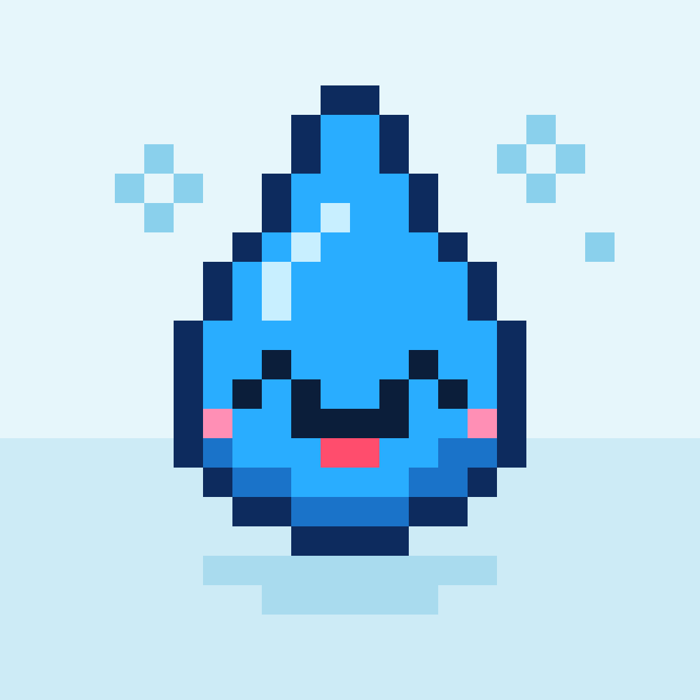

Gill privacy policy
Gill is the app for your water device and its pet. It is run by the Gill team. Questions: tristansym@gmail.com.
Last updated: November 26, 2026.
The short version
- We collect what Gill needs to work: your account, your water log, your pet, your friends and your messages.
- No ads, no tracking, no outside analytics. We never sell your data.
- Delete your account in the app at any time, and everything goes with it.
- Gill is for people 13 and older.
What we collect
- Your account: your email address, your password (stored scrambled by our database provider, so nobody can read it, us included), your username, and a display name if you add one.
- Your water log: each sip your device records (amount and time), your daily totals and goals, and your device's settings.
- Your pet: its mood, energy and happiness, worked out from your water log, and the pet you choose to wear.
- Your device: its hardware ID, firmware version and battery level, and a record of its restarts (when, why, and how long it ran). These help us fix crashes.
- Friends: your friends and friend requests, invite codes, the splashes you send and receive, and the people you block or report.
- Messages: the messages you and your friends send each other, when they were sent, and whether they've been seen. They're stored on our server. In the app, only you and that friend can read them. If you report a message, we keep a copy of it with the report. We read a message only if someone reports it. A word filter checks each message as it's sent.
- Notifications, if you allow them: a code from your phone's notification service, so we can tell you when a friend sends you a splash, a friend request or a message. Signing out removes it from our server.
- Error reports: when Gill hits an error, the error message, where in the app it happened, the screen you were on, the time, the app version, and your phone's system and its version. We strip out email addresses and codes before it leaves your phone.
- Usage counts: for each day, whether your device synced, how many sips were logged, how many splashes you sent, and how many times you opened Gill. We use these to see how the app is doing, and we count them ourselves. No outside analytics service is involved.
- Feedback you send from the app, with the app version and phone type.
We don't collect your location, contacts or photos. On some Android phones, Gill must ask for location permission to find your device over Bluetooth. It never reads or stores your location.
What friends see
Friends see your username, display name, pet, its mood, your streaks, and your daily progress as a percentage of your goal. They never see your email or how much you drink. Turn on Hide my mood, and friends see a neutral pet instead of your mood.
A notification shows the sender's name and what they sent, for example "💧 Maya sent you a water drop." It may appear on your lock screen. A message notification shows who sent it, and the message itself only where your iPhone shows notification previews: on most iPhones, once it's unlocked.
Who handles your data
Only the services we need to run Gill:
- Supabase stores your data, in the United States.
- Expo delivers app updates and sends notifications to Apple, including the text of a message notification.
- Apple delivers notifications to your iPhone. If you test Gill through TestFlight, Apple also shares crash reports and any feedback you choose to send, under Apple's own privacy policy.
- An email service sends sign-up and password emails.
Your phone also keeps a copy of your recent water log and your app settings.
How long we keep it
We keep your data until you delete your account. A chat stays until one of you deletes your account, even if one of you blocks or removes the other. Notification records are deleted after 2 days.
Deleting your data
Delete your account in Gill at any time: Settings › Account › Delete account. That deletes your account and everything above from our server at once, including your water log, pet, friends, splashes, every message you sent or received, notification codes, error reports and feedback. Your phone's own copy goes when you delete the app.
Your choices
- Turn notifications off in your phone's Settings.
- Hide your mood from friends in Gill's Settings.
- Block or report anyone from their profile or your chat with them.
- Report a message by pressing and holding it.
Children
Gill is for people 13 and older, and we don't knowingly collect data from children under 13. If you think a child under 13 has an account, email us and we'll delete it.
Security
Gill talks to our server over an encrypted connection, and your device pairs with your phone over an encrypted Bluetooth link.
Changes
When what we collect changes, we'll update this page and the date at the top.